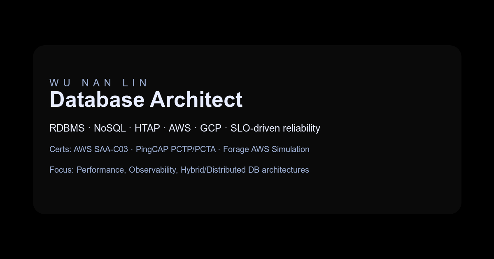

WL
Portfolio / Resume
Wu Nan Lin
Product-focused engineer — performance, reliability, velocity first
Building dependable data platforms and systems with reliability-first design.
Delivering DBA/DBRE and systems architecture with a focus on high availability, observability, platformization, and distributed systems—hands-on execution paired with systematic decisions for stability, speed, and long-term evolution.
Lead product × DBA collaboration to shorten DB change cycles through self-service and guardrails.
Design DB workflows and platforms that raise delivery speed while controlling risk.
Mentor teams on product thinking and DB reliability via standards, tooling, and hands-on reviews.
Covering end-to-end database architecture across RDBMS, NoSQL, HTAP, and cloud platforms to deliver resilient, performant services.
Architecture
Design end-to-end data architectures across RDBMS, NoSQL, and HTAP with clear patterns for scaling and governance.
Reliability
DBRE mindset: build resilient services with SLOs, HA/backup drills, and observability that keeps performance predictable.
Platform enablement
Ship reusable platforms, guardrails, and tooling so product teams move faster without sacrificing stability.
Architecture advising to maximize performance and reliability across hybrid cloud data stacks.
Analytics + automation hub that unifies live metrics, alerts, and runbooks.
Next.js
WebSockets
PostgreSQL
Feature flag + A/B testing workflow with clear guardrails and reporting.
React
GraphQL
Airflow
Composable UI kit with tokens, themes, and Figma parity for product teams.
Storybook
TypeScript
Figma
DBRE playbooks plus automation for SLO tracking, backup/restore drills, and failover readiness.
SLOs
Backups
Chaos
Orchestrated cutovers for RDBMS/NoSQL/HTAP across hybrid cloud using zero-downtime patterns.
Aurora
TiDB
Redis
Prebuilt runbooks and automation for backups, restores, and DR validation across environments.
Backups
Restore Drills
Runbooks
Governance policies and dashboards to keep DB spend, capacity, and performance within targets.
Cost Controls
Capacity Planning
Dashboards
Standards for schema changes with safe rollout, canary patterns, and automated rollback paths.
Migrations
Canary
Rollback
Show more
Certifications
Credentials
Database stewardship for core 104 workloads, ensuring dependable daily operations.
Performance monitoring and tuning to keep databases running efficiently.
Hybrid cloud database system maintenance across distributed environments.
High availability through backup planning and validation drills.
Technical consulting and managed/open-source support to maximize application performance.
Managed and operated production networked systems.
Administered databases to ensure availability and reliability.
Cloud & Platform
Cloud-Native Architecture
High Availability Architecture
Amazon Web Services (AWS)
Google Cloud Platform (GCP)
Containers (Docker)
OS & VMware Administration
DevOps & IaC
Infrastructure as Code (Terraform / Ansible)
GitHub / JIRA
Prometheus / Grafana
Process Design
Standards Definition
Observability
Monitoring & Alerting
Distributed Tracing (OpenTelemetry)
Logging Pipelines (ELK / EFK)
SLOs & Error Budgets
Resilience & Reliability Engineering
Capacity & Cost Optimization
Data Platforms
RDBMS (MySQL / MariaDB)
Aurora RDS
NoSQL (Redis / MongoDB)
ProxySQL
HTAP (TiDB)
Hybrid / Distributed Architectures
AI & Prompting
Artificial Intelligence
ChatGPT & Prompt Engineering
Text-to-Text Prompting
Talks & Conferences
Speaking
Shared practices to harden and stabilize 104’s database service architecture across hybrid environments.
View talk
